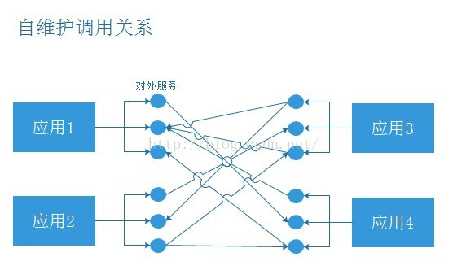
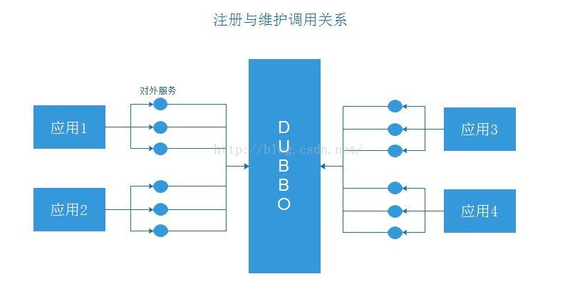
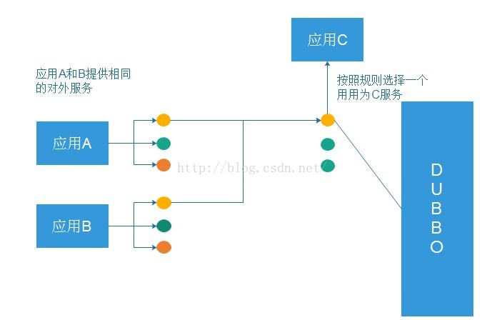
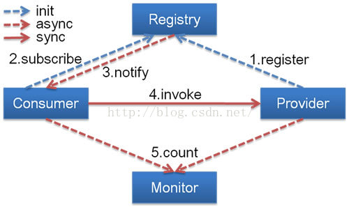
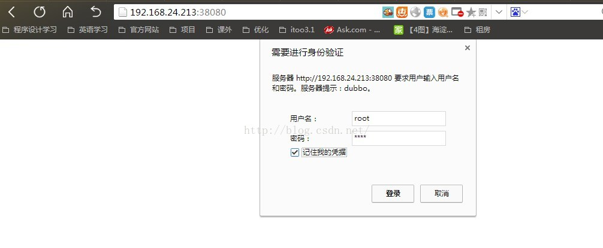
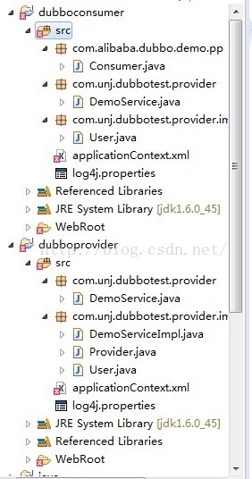
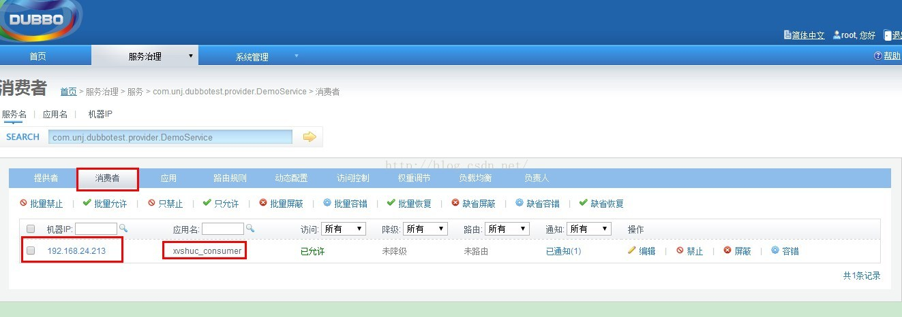

不久前，我们讨论过Nginx+tomcat组成的集群，这已经是非常灵活的集群技术，但是当我们的系统遇到更大的瓶颈，全部应用的单点服务器已经不能满足我们的需求，这时，我们要考虑另外一种，我们熟悉的内容，就是分布式，而当下流行的Dubbo框架，不容我们忽视，这里，咱们一起来探讨一下这个框架的使用。
一，背景
以前我们需要远程调用他人的接口，我们是这么做的：

我们遇到的问题：
(1) 当服务越来越多时，服务URL配置管理变得非常困难，F5硬件负载均衡器的单点压力也越来越大。
此时需要一个服务注册中心，动态的注册和发现服务，使服务的位置透明。
并通过在消费方获取服务提供方地址列表，实现软负载均衡和Failover，降低对F5硬件负载均衡器的依赖，也能减少部分成本。
(2) 当进一步发展，服务间依赖关系变得错踪复杂，甚至分不清哪个应用要在哪个应用之前启动，架构师都不能完整的描述应用的架构关系。
这时，需要自动画出应用间的依赖关系图，以帮助架构师理清理关系。
(3) 接着，服务的调用量越来越大，服务的容量问题就暴露出来，这个服务需要多少机器支撑？什么时候该加机器？
为了解决这些问题，第一步，要将服务现在每天的调用量，响应时间，都统计出来，作为容量规划的参考指标。
其次，要可以动态调整权重，在线上，将某台机器的权重一直加大，并在加大的过程中记录响应时间的变化，直到响应时间到达阀值，记录此时的访问量，再以此访问量乘以机器数反推总容量。
为解决这些问题，Dubbo为我们做了什么呢：

负载均衡：

这就是所谓的软负载均衡！
现在让我们一起来接触下这个优秀的框架：
简介
架构如图：

节点角色说明：
Provider: 暴露服务的服务提供方。
Consumer: 调用远程服务的服务消费方。
Registry: 服务注册与发现的注册中心。
Monitor: 统计服务的调用次调和调用时间的监控中心。
Container: 服务运行容器。
调用关系说明：
0. 服务容器负责启动，加载，运行服务提供者。
1. 服务提供者在启动时，向注册中心注册自己提供的服务。
2. 服务消费者在启动时，向注册中心订阅自己所需的服务。
3. 注册中心返回服务提供者地址列表给消费者，如果有变更，注册中心将基于长连接推送变更数据给消费者。
4. 服务消费者，从提供者地址列表中，基于软负载均衡算法，选一台提供者进行调用，如果调用失败，再选另一台调用。
5. 服务消费者和提供者，在内存中累计调用次数和调用时间，定时每分钟发送一次统计数据到监控中心。
Dubbo提供了很多协议，Dubbo协议、RMI协议、Hessian协议，我们查看Dubbo源代码，有各种协议的实现，如图所示：

我们之前没用Dubbo之前时，大部分都使用Hessian来使用我们服务的暴露和调用，利用HessianProxyFactory调用远程接口。
上面是参考了Dubbo官方网介绍，接下来我们来介绍SpringMVC、Dubbo、Zookeeper整合使用。
第一步：在Linux上安装Zookeeper
Zookeeper作为Dubbo服务的注册中心，Dubbo原先基于数据库的注册中心，没采用Zookeeper，Zookeeper一个分布式的服务框架，是树型的目录服务的数据存储，能做到集群管理数据 ，这里能很好的作为Dubbo服务的注册中心，Dubbo能与Zookeeper做到集群部署，当提供者出现断电等异常停机时，Zookeeper注册中心能自动删除提供者信息，当提供者重启时，能自动恢复注册数据，以及订阅请求。我们先在linux上安装Zookeeper，我们安装最简单的单点，集群比较麻烦。
先需要安装JdK，从Oracle的Java网站下载，安装很简单，就不再详述。
单机安装非常简单，只要获取到 Zookeeper 的压缩包并解压到某个目录如：C:\zookeeper-3.4.5\下，Zookeeper 的启动脚本在 bin 目录下，Windows 下的启动脚本是 zkServer.cmd。
在你执行启动脚本之前，还有几个基本的配置项需要配置一下，Zookeeper 的配置文件在 conf 目录下，这个目录下有 zoo_sample.cfg 和 log4j.properties，你需要做的就是将 zoo_sample.cfg 改名为 zoo.cfg，因为 Zookeeper 在启动时会找这个文件作为默认配置文件。下面详细介绍一下，这个配置文件中各个配置项的意义。
<span style="font-size:18px;"># The number of milliseconds of each tick tickTime=2000 # The number of ticks that the initial # synchronization phase can take initLimit=10 # The number of ticks that can pass between # sending a request and getting an acknowledgement syncLimit=5 # the directory where the snapshot is stored. # do not use /tmp for storage, /tmp here is just # example sakes. dataDir=C:\\zookeeper-3.4.5\\data dataLogDir=C:\\zookeeper-3.4.5\\log # the port at which the clients will connect clientPort=2181 # # Be sure to read the maintenance section of the # administrator guide before turning on autopurge. # # http://zookeeper.apache.org/doc/current/zookeeperAdmin.html#sc_maintenance # # The number of snapshots to retain in dataDir #autopurge.snapRetainCount=3 # Purge task interval in hours # Set to "0" to disable auto purge feature #autopurge.purgeInterval=1</span>
- tickTime：这个时间是作为 Zookeeper 服务器之间或客户端与服务器之间维持心跳的时间间隔，也就是每个 tickTime 时间就会发送一个心跳。
- dataDir：顾名思义就是 Zookeeper 保存数据的目录，默认情况下，Zookeeper 将写数据的日志文件也保存在这个目录里。
- dataLogDir：顾名思义就是 Zookeeper 保存日志文件的目录
- clientPort：这个端口就是客户端连接 Zookeeper 服务器的端口，Zookeeper 会监听这个端口，接受客户端的访问请求。
当这些配置项配置好后，你现在就可以启动 Zookeeper 了，启动后要检查 Zookeeper 是否已经在服务，可以通过 netstat – ano 命令查看是否有你配置的 clientPort 端口号在监听服务。
第二步：配置dubbo-admin的管理页面，方便我们管理页面
(1)下载dubbo-admin-2.4.1.war包，在windows的tomcat部署，先把dubbo-admin-2.4.1放在tomcat的webapps/ROOT下，然后进行解压
(2)然后到webapps/ROOT/WEB-INF下，有一个dubbo.properties文件，里面指向Zookeeper ，使用的是Zookeeper 的注册中心，如图所示：
<span style="font-size:18px;">dubbo.registry.address=zookeeper://127.0.0.1:2181 dubbo.admin.root.password=root dubbo.admin.guest.password=guest</span>
(3)然后启动tomcat服务，用户名和密码：root,并访问服务，显示登陆页面，说明dubbo-admin部署成功，如图所示：

第三步：SpringMVC与Dubbo的整合，这边使用的Maven的管理项目
第一：我们先开发服务注册的，就是提供服务，项目结构如图所示：

（1）test-maven-api项目加入了一个服务接口，代码如下：
public interface TestRegistryService {
public String hello(String name);
}（2）test-maven-console在pom.xml加入Dubbo和Zookeeper的jar包、引用test-maven-api的jar包，代码如下：
<span style="font-size:18px;"><dependency>
<groupId>cn.test</groupId>
<artifactId>test-maven-api</artifactId>
<version>0.0.1-SNAPSHOT</version>
</dependency>
<dependency>
<groupId>com.alibaba</groupId>
<artifactId>dubbo</artifactId>
<version>2.5.3</version>
</dependency>
<dependency>
<groupId>org.apache.zookeeper</groupId>
<artifactId>zookeeper</artifactId>
<version>3.4.6</version>
</dependency>
<dependency>
<groupId>com.github.sgroschupf</groupId>
<artifactId>zkclient</artifactId>
<version>0.1</version>
</dependency></span>(3)test-maven-console实现具体的服务，代码如下：
@Service("testRegistryService")
public class TestRegistryServiceImpl implements TestRegistryService {
public String hello(String name) {
return "hello"+name;
}
}(4)我们服务以及实现好了，这时要暴露服务，代码如下：
<?xml version="1.0" encoding="UTF-8"?> <beans xmlns="http://www.springframework.org/schema/beans" xmlns:xsi="http://www.w3.org/2001/XMLSchema-instance" xmlns:jee="http://www.springframework.org/schema/jee" xmlns:tx="http://www.springframework.org/schema/tx" <span style="color:#cc0000;">xmlns:dubbo="http://code.alibabatech.com/schema/dubbo"</span> xmlns:context="http://www.springframework.org/schema/context" xsi:schemaLocation="http://www.springframework.org/schema/beans http://www.springframework.org/schema/beans/spring-beans-3.1.xsd http://www.springframework.org/schema/tx http://www.springframework.org/schema/tx/spring-tx-3.1.xsd http://www.springframework.org/schema/jee http://www.springframework.org/schema/jee/spring-jee-3.1.xsd <span style="color:#990000;">http://code.alibabatech.com/schema/dubbo http://code.alibabatech.com/schema/dubbo/dubbo.xsd</span> http://www.springframework.org/schema/context http://www.springframework.org/schema/context/spring-context-3.1.xsd" default-lazy-init="false" > <!-- 提供方应用名称信息，这个相当于起一个名字，我们dubbo管理页面比较清晰是哪个应用暴露出来的 --> <dubbo:application name="dubbo_provider"></dubbo:application> <!-- 使用zookeeper注册中心暴露服务地址 --> <dubbo:registry address="zookeeper://127.0.0.1:2181" check="false" subscribe="false" register=""></dubbo:registry> <!-- 要暴露的服务接口 --> <dubbo:service interface="cn.test.dubbo.registry.service.TestRegistryService" ref="testRegistryService" /> </beans>
说明：
dubbo:registry 标签一些属性的说明：
1）register是否向此注册中心注册服务，如果设为false，将只订阅，不注册。
2）check注册中心不存在时，是否报错。
3）subscribe是否向此注册中心订阅服务，如果设为false，将只注册，不订阅。
4）timeout注册中心请求超时时间(毫秒)。
5）address可以Zookeeper集群配置，地址可以多个以逗号隔开等。
dubbo:service标签的一些属性说明：
1）interface服务接口的路径
2）ref引用对应的实现类的Bean的ID
3）registry向指定注册中心注册，在多个注册中心时使用，值为<dubbo:registry>的id属性，多个注册中心ID用逗号分隔，如果不想将该服务注册到任何registry，可将值设为N/A
4）register 默认true ，该协议的服务是否注册到注册中心。
(5)启动项目，然后我们在Dubbo管理页面上显示，已经暴露的服务，但显示还没有消费者，因为我们还没实现消费者服务，如图所示：
第二：我们在开发服务消费者，就是调用服务，我们在新建一个新的消费者项目：
（1）test-maven-server-console的pom.xml引入Dubbo和Zookeeper的jar包、test-maven-api的jar包，因为引入test-maven-api的jar包，我们在项目中调用像在本地调用一样。代码如下：
<span style="font-size:18px;"><dependency>
<groupId>cn.test</groupId>
<artifactId>test-maven-api</artifactId>
<version>0.0.1-SNAPSHOT</version>
</dependency>
<dependency>
<groupId>com.alibaba</groupId>
<artifactId>dubbo</artifactId>
<version>2.5.3</version>
</dependency>
<dependency>
<groupId>org.apache.zookeeper</groupId>
<artifactId>zookeeper</artifactId>
<version>3.4.6</version>
</dependency>
<dependency>
<groupId>com.github.sgroschupf</groupId>
<artifactId>zkclient</artifactId>
<version>0.1</version>
</dependency></span>（2）test-maven-server-console项目的具体实现，代码如下：
@Controller
public class IndexController {
@Autowired
private TestRegistryService testRegistryService;
@RequestMapping("/hello")
public String index(Model model){
String name=testRegistryService.hello("zz");
System.out.println("xx=="+name);
return "";
}
}(3)我们要引用的地址，代码如下：
<?xml version="1.0" encoding="UTF-8"?>
<beans xmlns="http://www.springframework.org/schema/beans"
xmlns:xsi="http://www.w3.org/2001/XMLSchema-instance"
xmlns:jee="http://www.springframework.org/schema/jee"
xmlns:tx="http://www.springframework.org/schema/tx"
<span style="background-color: rgb(255, 255, 255);"><span style="color:#990000;">xmlns:dubbo="http://code.alibabatech.com/schema/dubbo"</span></span>
xmlns:context="http://www.springframework.org/schema/context"
xsi:schemaLocation="http://www.springframework.org/schema/beans http://www.springframework.org/schema/beans/spring-beans-3.1.xsd
http://www.springframework.org/schema/tx http://www.springframework.org/schema/tx/spring-tx-3.1.xsd
http://www.springframework.org/schema/jee http://www.springframework.org/schema/jee/spring-jee-3.1.xsd
<span style="color:#990000;">http://code.alibabatech.com/schema/dubbo http://code.alibabatech.com/schema/dubbo/dubbo.xsd</span>
http://www.springframework.org/schema/context http://www.springframework.org/schema/context/spring-context-3.1.xsd"
default-lazy-init="false" >
<dubbo:application name="dubbo_consumer"></dubbo:application>
<!-- 使用zookeeper注册中心暴露服务地址 -->
<dubbo:registry address="zookeeper://192.168.74.129:2181" check="false"></dubbo:registry>
<!-- 要引用的服务 -->
<dubbo:reference interface="cn.test.dubbo.registry.service.TestRegistryService" id="testRegistryService"></dubbo:reference>
</beans>
说明：
dubbo:reference 的一些属性的说明：
1）interface调用的服务接口
2）check 启动时检查提供者是否存在，true报错，false忽略
3）registry 从指定注册中心注册获取服务列表，在多个注册中心时使用，值为<dubbo:registry>的id属性，多个注册中心ID用逗号分隔
4）loadbalance 负载均衡策略，可选值：random,roundrobin,leastactive，分别表示：随机，轮循，最少活跃调用
(4)项目启动，Dubbo管理页面，能看到消费者，如图所示：

(5)然后访问消费者项目，Controller层能像调用本地一样调用服务的具体实现，如图所示：
总结：
经过一系列的操作之后，我们感觉，的确很简单，dubbo给我们封装了很多操作，让我们不需要过多考虑具体的实现细节，配置化生成咱们的应用，这样的思想，现在在IT行业正在盛行！